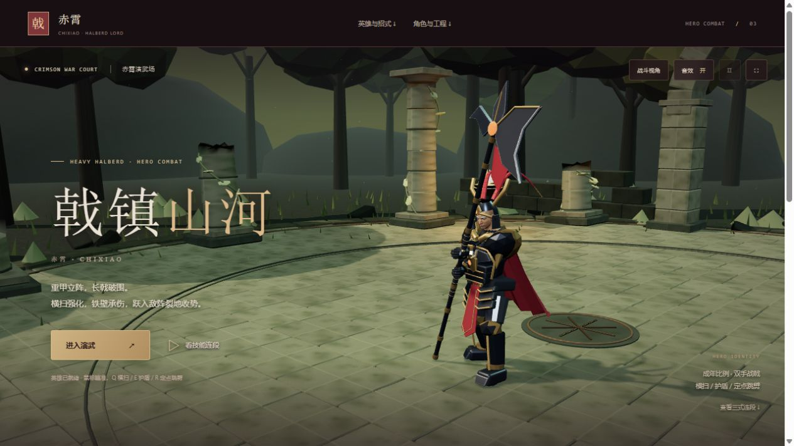
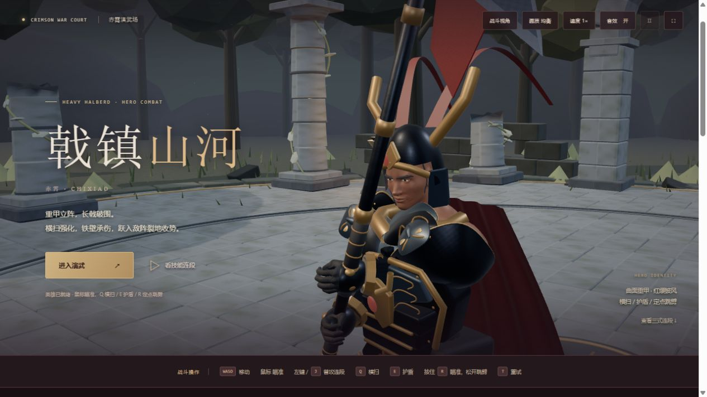

一个能实际战斗的角色原型。
以CC0成年人体与通用动作为基础，制作原创赤霄盔甲和重戟，导出13段动作，接入Three.js网页与Godot工程。
以CC0成年人体与通用动作为基础，制作原创赤霄盔甲和重戟，导出13段动作，接入Three.js网页与Godot工程。
13.9秒真实战斗录像，展示脸部近景、横扫、护盾与跳劈；网页可对抗三名动态守卫。现有观感仍有明显商业美术差距。
留下可编辑资产、可复用战斗框架、提示词与检查记录。下一轮可在同一场景比较素材路线，先验收一个人物和一次重击。

RESULTS & ITERATIONS
最新产物是原创成年重戟战士“赤霄”：能在网页中对抗三名会追击、蓄力反击和受击的守卫。模型、骨骼和动作可编辑，战斗使用同一套命中规则。它是已验证的技术样例，美术观感仍未达到商业吕布或《英雄联盟》英雄成品的水平。
浏览器 WebGL 实录，加上当时的 HUD、伤害浮字与游戏音效。视频由真实 WebM 转成 H.264/AAC；没有通过改写生命或敌人状态制造胜利。
亲自操作 ↗身体和装备是否像一个完整角色；腰胯、手臂和武器是否有发力先后；命中是否伴随硬直、击退或击飞；缩回游戏尺寸后是否仍能读清轮廓。前三者能运行，不意味着角色美术已经达标。
以 Quaternius 成年基体和通用动作为基础，制作原创重甲、双手战戟、Q横扫/E护盾/R跳劈。轮廓和技能分工明确了，几何拼装感依旧明显。


这是不同版本、镜头与光照下的历史记录，不是控制变量的画质 A/B 实验。它们用于回看演进，不用于证明达到商业品质。
WHAT WE LEARNED
最重要的修正是：把工程验收通过当成角色品质完成，会偏离最初的目标。人物的视觉可信度来自设计、形体、表面和运动相互支持；脚锁和贴图存在，只解决其中一部分。
| 观察 | 更接近的原因 | 对应的制作工作 |
|---|---|---|
| 眼神空、嘴脸硬 | 五官体积、头颈关系和表情设计不足 | 专门头部雕刻、绘色、眼睑与基础表情 |
| 肩甲像球体、饰件像积木 | 装备设计和制造结构不统一 | 重做甲片厚度、叠压、连接与关节空间 |
| 金属、皮肤都像塑料 | 材质分区、绘制明暗与表面响应欠缺 | 专属UV、纹理绘制、材质/光照联合调整 |
| 武器在动，身体没在发力 | 重心、支撑脚、时序与制动设计不足 | 重做关键姿势和运动间距，再修握持与接触 |
| 近景细节多，俯视仍没感觉 | 制作没有围绕实际游戏镜头组织主次 | 在正常屏幕尺寸下反复查轮廓、朝向和色块 |
这版已经有约 26.7 万三角面，仍然显得假。瓶颈在造型、绘制和动作设计，继续细分网格的收益很低。
基于本项目最终资产与实际画面的判断
我们要追求的是成熟风格化角色的可信感：清楚的头肩武器轮廓、统一的人体和装备结构、经过设计的明暗与材质、具有性格和重量的动作，以及正常游戏尺寸下的可读性。“真实”在这里并非要求照片级皮肤或电影展示模型。
Riot 的李青更新资料把人体比例、拓扑、脸身UV、贴图、绑定和攻击节奏分别交给对应制作环节；清晰度资料强调轮廓、朝向及技能视觉主次。这支持我们把角色资产独立制作、在目标镜头验收的思路。李青制作资料 ↗ 视觉清晰度 ↗
任务分解、Blender脚本、导入导出、动作映射、命中规则、镜头与反馈、运行检查和交付记录。
原画、解剖和脸型、装备语言、拓扑、纹理绘制、蒙皮变形、动作导演与审美返修。
本项目证明了 Codex 能组织本机 Blender Python → 可编辑模型与动作 → 网页/Godot接入 → 验证和实录这条独立路线。当前没有调用 Fable、Tripo 或 Seedance，也没有实际建立 Blender MCP 连接，因此没有完成同输入、同工具、同产物的替代对照。
能够调用建模工具，不自动等于具备某一成品的美术水平。更换编排助手，也不会让低质量身体、甲片或动画自然变成成熟资产。要判断替代价值，应比较相同角色的最终质量、可编辑性、修正工作量、实际时间和费用。
HOW IT WORKS
下面是完整人物资产流程。每一步都要留下具体文件和画面，发现问题后回到对应步骤修改。标记“待验证”的环节属于下一轮素材路线。
确定成年重甲、双手重戟、暗铁/旧金/深红和俯视战斗。为头肩、武器和披风设定主要轮廓。
当前已有方向；成熟角色原画与统一设计仍待深化。
可原创建模、改制成熟授权资产，或接入AI三维生成。三种来源都需核对模型本体、许可和可编辑性。
外部AI三维生成尚未实测，不存在已验证的生成成功率或账单。
Blender脚本制作装备与武器，随后进行脸部和曲面甲片改动。结构、厚度与关节位置要先成立，再做表面细节。
这些脚本是研发阶段记录，依赖阶段输入，不能对最终模型反复执行来获得更高品质。
颜色、粗糙度/金属度与切线法线实际导出到网格。曾发现皮肤粗糙度在Blender可见、GLB中丢失，后用显式通道连接修复。
图像存在≠节点连接有效≠最终引擎表面好看。三个层面都要检查。
骨骼变换通过顶点权重传给网格。双手对齐同一根刚性戟柄；辅助骨控制披风和丝缨，最后烘焙到导出动作。
握持定位通过几何检查，手指造型、表情和高级肩肘变形仍需美术审查。
通用动作结合重戟控制与关键帧调整。逐帧检查蒙皮布料外表面和闭合实体；世界脚锁在动画混合之后处理，起跳时释放。
脚不滑、无明显穿插是基础；发力、节奏和性格仍需逐动作设计。
Three.js播放GLB，控制器驱动世界位移、状态与命中；Godot工程使用字节一致的模型。受击、护盾、击飞和死亡来自规则事件。
输入决定状态 → 动画与位移推进 → 命中事件 → 反馈 → 收势/下一招。
兼容蒙皮网格合批、共享资源、几何LOD、着色预热。保留动作关键帧与布料拓扑，再执行实际连战与媒体录制。
通过数据检查和运行检查后，还需要独立的视觉与手感验收。
“前摇—有效窗—收势”决定输入与命中节奏。有效窗内按方向、距离和扇形检查目标；同次攻击限制重复命中。普攻、横扫、护盾和跳劈各有作用。以下是本项目现有数值，不是王者荣耀或英雄联盟官方参数。
| 动作 | 总时长 | 接触 / 有效窗 | 演示中观察 |
|---|---|---|---|
| 普攻一式 | 0.72s | 0.23–0.31s | 起手与劈下，短进身 |
| 普攻二式 | 0.82s | 0.30–0.39s | 斜扫与连段衔接 |
| 普攻三式 | 1.00s | 0.40–0.50s | 更大进身、硬直与震退 |
| Q 破阵横扫 | 1.08s | 0.42–0.55s | 扇形重击，命中获得戟势强化 |
| E 铁壁护身 | 施法0.32s | 护盾持续4s | 护盾随身，实际受击扣盾 |
| R 坠星裂地 | 1.28s | 0.18s起跳 / 0.92s落地 | 世界弧线由控制器驱动，范围伤害与击飞 |
Idle / Walk / Run / Attack1 / Attack2 / Attack3 / Sweep / Guard / LeapSlam / Hit / Death / Dodge / Victory 为13段导出动作。浏览器把 Sweep、Guard、LeapSlam 映射为技能名。
视频提供姿势和节奏。要得到可编辑骨骼动作，需要手工关键帧或视频动捕，再进行重定向与接触修正。Seedance视频本身不等于FBX动画。
角色root的世界移动由游戏控制；髋部和关节保留姿态变化。起跳不能同时在模型和控制器里重复上移，否则会出现双倍跳高或脚离地。
已制作帧可以用真实几何检查；转向和动作混合会引入新姿态，因此另用脚锁和胶囊近似避让。两者覆盖不同情景，不代表任意姿态严格无穿插。
蒙皮把一个顶点按权重分配给若干关节，叠加“当前骨骼世界变换 × 逆绑定矩阵”的作用。检查对象必须是变形后的网格，单看骨骼位置或包围盒不能证明身体与披风没有相交。
脚锁的锚点在世界空间保存。角色转向、进身后，通过两段腿骨IK保持接地；当髋部高度和腿长无法够到原目标时，把新落点收回可达范围，或明确释放。跳跃期间不能继续把脚强压到地面。
读取输入 → 推进战斗状态 → 设置角色世界位移
secondary.prepare() // 移除上一帧程序性修正
AnimationMixer.update(dt) // 采样并混合作者动作
secondary.update(dt, state) // 世界脚锁、必要的胶囊近似避让
采样 HalberdTip / Grip // 让武器拖尾跟随最后的姿态
处理技能 / 受击事件 → 更新HUD → 实际渲染PMREM反射环境由本地亮面板场景生成一次，配合普通直接光、阴影和AgX色调映射。它改善表面光照，不会替代角色形体和贴图设计。Q/E/R的反馈由规则事件触发，伤害浮字显示真实命中数值。
实际录像在渲染后把WebGL画面复制到录制画布，叠加当前会话的生命、护盾和伤害浮字；WebAudio输出接入录像流。MediaRecorder产生WebM，再由FFmpeg转成MP4。它不采集麦克风，也不是AI生成的战斗视频。
| 问题 | 定位与修复 | 留下的原则 |
|---|---|---|
| 皮肤在Blender有粗糙度，GLB中没有 | 改成显式ORM通道连接，再独立导出、新导入核验 | 检查实际交付格式，不能只看编辑器节点 |
| 20Hz抽样通过，相邻帧仍穿插 | 100Hz逐帧检查发现夹帧问题，补修对应布料关键帧 | 说明采样覆盖；不能把稀疏通过写成全动作通过 |
| 跑步脚锁把腿压向不可达地面点 | 按腿长求可达范围，收落点或释放，并给真实抬脚姿态回归检查 | IK还需要解剖约束，不能只追求数值锁定 |
| 程序修正逐帧累积 | 下一帧动画采样前恢复上一次修正，再计算新的约束 | 作者动作与程序修正要有清楚的读写顺序 |
| 原生导入通过，却没有GPU画面 | 检查显示驱动，headless只有数据状态证据 | 导入、规则、画面、性能分别验收 |
| 改完源码，打开的仍是旧页面 | 核对服务源目录与dist，修改后重新构建 | 记录实际打开的版本和资产SHA |
| 只报告最高的一次FPS | 保留基线、首轮与末轮所有原始帧间隔 | 暴露波动与卡顿，不把偶然结果包装为稳定性能 |
PROMPT NOTEBOOK
这里提供两类文本：下方历史需求是本次会话原话摘录；工作台里的13个模板是根据经验新整理、尚未执行的制作指令。原作者逐字提示词没有获得，本项目也没有Tripo/Seedance实际调用提示词可供展示。
可替换角色的完整制作模板
修改以上字段会更新模板文本。这里不调用生成模型、不扣费，也不生成三维素材。通用的“避免事项”表达制作意图，不能直接当作某个服务的负面提示词参数。
这句话没有定位返修对象。更可执行的反馈是：“正常俯视下肩甲仍像球体；请重做甲片厚度和叠压，保留肩部活动空间，交付灰模、线框和抬臂姿势对照。”每次修改都应包含对象、问题、约束、产物和检查方法。
TOOLS & REPRODUCTION
| 工具 / 环节 | 用途 | 本项目状态 |
|---|---|---|
| Codex | 分解任务、编写代码和脚本、执行并观察、整理证据 | 实际使用；不等于自动获得商业角色审美 |
| Blender 4.5.14 LTS / Python | 建模、材质、骨架、动作、导出和新导入检查 | 实际使用后台脚本，无须MCP才能编辑场景 |
| Three.js 0.187 | GLB、骨骼动画、PMREM反射、灯光阴影、战斗及录像 | 本地依赖已随工程保存 |
| Node.js 22.15.0（制作时） | 本地服务、资产处理、规则检查与打包 | 网页运行不需要重新下载前端依赖 |
| Godot 4.5.2 | 同一模型的独立原生工程与headless检查 | 已导入与执行59项检查；原生GPU画面未验收 |
| FFmpeg | 实录WebM转H.264/AAC MP4、检查媒体 | 已有13.9秒实战成片 |
| 专用贴图绘制 / 角色美术 | 统一设计、表面绘制、拓扑与高级变形、动画精修 | 下一轮提高观感的主要制作投入 |
| Blender MCP / Tripo / Seedance | 另一条可接入的编排、素材生成与视频参考路线 | 本项目未实际接入或调用，结果和费用待验证 |
下载 Godot角色与工程包 继续接入，或在Blender/引擎中导入 最终GLB。项目的 play-web.cmd 会打开本机5222端口预览；如修改源文件，先重建，避免打开旧dist。
npm run build
powershell -NoProfile -File scripts/preview-warlord.ps1
# 可玩演武：http://127.0.0.1:5222/
# 完整研究：http://127.0.0.1:5222/research.html
# 或直接服务源文件，默认端口5218：
npm run dev
# 资产、规则和研究页静态检查：
npm run verify
# 工程包需在修改后重新生成：
npm run package前端依赖已本地保存。重新运行模型优化需要 npm ci 安装package-lock锁定的开发依赖，使用支持相应脚本的Node版本；制作时为22.15.0。Blender/Godot源文件可独立编辑。历史雕形与碰撞修复脚本依赖中间工程，完整工程包不包含全部大体积研发阶段文件，不能声称从一个命令完全重现所有历史迭代。
MCP是让编排助手访问外部工具的接口。它可以传递操作和结果，但不会自动解决人体、装备、贴图和动画的美术问题。下面是按当前官方/项目文档核对的基础命令；只用于说明，不代表本机已经安装或授权。
# 已有uv/Blender后，按社区插件说明安装并在Blender启用：
uvx mcp-for-blender install-addon
codex mcp add blender -- uvx mcp-for-blender
codex mcp list
# 再读取一个测试场景、截图、保存副本，确认工具真正可用。
# Tripo官方CLI要求Node.js 20+；先核对账号所属站点：
npm install -g tripo-cli
tripo --version
# 国际站使用 ov；中国站使用 cn。只选择对应的一条：
# tripo login --region ov
# tripo login --region cn
tripo doctorBlender侧仍需启用社区插件并启动服务；Codex侧注册成功不等于Blender侧已连通。Tripo账号区域不能根据语言猜测，登录授权和实际余额要单独核对。生成、纹理、绑定等任务的计费和可用能力以服务版本为准；保留任务ID，超时先查询，不能盲目重复提交。
需要视频参考时，再接对应视频服务。要从视频获得骨骼动画，还需动作捕捉/重定向/关键帧修正。不要把“已生成视频”记录为“已完成动画资产”。
EVIDENCE & LIMITS
以下是2026-11-12保存的历史验证，不冒充本次网页整理时重新执行的设备测试。新增网页检查与角色验证分开记录。
2026-11-21新增研究页已执行本地文件、链接、导出一致性、语法与数据对照检查；本轮浏览器预览访问授权被拒绝，因此布局、复制、筛选与下载的实际浏览器验收仍未执行。
同一台 RTX 4070 Laptop GPU，1280×720、DPR=1、均衡画质、正常游戏速度。每轮都运行普通三敌人连战，记录未经游戏dt上限裁剪的RAF间隔。
| 记录 | 平均RAF帧率 | P95 / P99 | 最大间隔 | >100ms |
|---|---|---|---|---|
| V4基线 / 120.004s | 47.848 FPS | 33.2 / 41.6ms | 1712.6ms | 5次 |
| V5首轮 / 120.025s | 73.218 FPS | 25 / 41.6ms | 412.6ms | 44次 |
| V5末轮 / 120.008s | 50.896 FPS | 33.3 / 41.6ms | 66.6ms | 0次 |
首轮同期执行原生导入；末轮没有本项目导入/压缩重任务。两轮结果有明显波动，不能宣称稳定60FPS，也不对散热、系统后台任务或呈现节奏做未验证归因。末轮14轮全胜、0运行错误，绘制调用均值约458，纹理计数全程36。RAF呈现节奏不等于隔离GPU耗时，资源计数不等于实测显存。
最终离线检查覆盖13动作、1,300帧，按真实顶点、权重、骨骼姿态与逆绑定矩阵计算蒙皮几何，并对闭合身体/护甲/武器判内外。布料外表面顶点最小正间隙约1.05mm；这不是对整个4mm布料厚壳或所有面间相交的全面证明。
早先20Hz抽样没有发现的夹帧穿插，在100Hz逐帧复验中被发现并补修。最终保留基线报告和未改动作指纹，说明修过哪里。运行时另用胶囊近似保护混合姿态，脚锁处理世界移动、转向和进身；超出腿长的落点要重植或释放，不能强行拉伸。
离线动作、运行时混合、任意装备及复杂地形是不同问题。报告通过不意味着这些情景都通过了美术或物理验收。
完整几何报告 ↗灰模结构、脸型、甲片厚度、材质分区与中性灯光下的表面。
肩肘髋膝、握持、脚底与装备活动空间。
支撑、重心、先后、加速、制动、披风回稳和角色性格。
正常尺寸、不同朝向、命中范围、视觉主次和输入反馈。
源文件、动作映射、实际引擎导入、目标设备与可回退记录。
这是下一轮人可读的验收框架。没有预填主观分数，也不会把自动检查换算成“商业品质百分比”。
VALUE & NEXT EXPERIMENT
当前最值得保留的是战斗框架、资产合同和验证方式。下一轮应把美术资产作为独立目标，先完成一个人物、站姿、跑步和一次重击，再扩展技能。
| 路线 | 价值 | 主要工作与风险 | 当前结论 |
|---|---|---|---|
| 成熟授权资产改制 | 更快获得可靠的造型、拓扑与基础绑定 | 筛选与授权核对，统一风格、装备和专属动作；可能缺源文件 | 建议优先评估；尚未选购新资产 |
| AI三维生成后加工 | 探索原创轮廓，快速得到候选 | 结构一致性、关节拓扑、纹理、重绑和返工需实测 | 适合做对照实验；尚未执行 |
| 完整原创角色制作 | 最大限度控制身份、形体和装备语言 | 需要角色美术、贴图与动画的专业制作投入 | 可作为高质量目标；不能仅凭当前脚本保证 |
| 继续程序化拼装当前底稿 | 便于验证代码、规则和技术链路 | 加面数和装饰难以弥补设计与雕形短板 | 保留为技术原型，不作为冲击商业品质的主要底稿 |
先明确角色品质门槛，把素材与系统分别推进；同一份角色规格、动作映射和接触检查可以复用到NPC与装备变体。
固定输入和展示，比较候选模型、实际返工和最终可用性。省时、成本与偏好要用记录证明，不能从宣传视频推断。
后续还可研究：同一角色换装的一致性、视频动捕到重戟动作的修正、地形脚锁、统一风格NPC，以及目标引擎中的素材库管理。这些是扩展方向，不是已经完成的功能。
QUESTIONS & TERMS
不一定。原创制作、成熟授权资产改制、AI生成后加工都可能产出好素材。需要单独研究的是“如何稳定获得合适的人物资产”，而不是只寻找一个能一次生成完美人物的提示词。
更强工具可能帮助理解与执行，但当前角色的主要差距是设计、形体、绘制和动作。引擎会影响渲染、工作流与性能；同一个生硬模型放入另一引擎，仍需要返修这些美术问题。是否换引擎应由项目需求与目标设备决定。
PBR是一种表面响应方式。装备截面、UV、贴图绘制、粗糙度分区、灯光与整体色块都影响结果。统一金属度或增加细分，不能替代这些设计。风格化角色也要有可信的体积和材质差别。
视频是像素序列，没有可直接驱动游戏角色的关节层级和权重。动作捕捉可以估计运动，再重定向到目标骨架，但遮挡、脚滑、双手武器和接触关系常需修正。手工关键帧也可以直接依据视频制作。
新增技能不会修复脸型、装备结构和身体发力。特效能加强重要动作的反馈，但过多亮光和烟雾也会遮挡问题与命中范围。先让一个无特效重击成立，更容易判断品质是否真正提高。
目前没有同题素材路线的完整费用与人工时间记录，因此不能给可靠报价、成功率或提速百分比。应先确定具体质量参考、目标设备、源文件与授权要求，再做小样记录。外部三维生成尚未调用，不等于整个项目没有本机计算与制作成本。
分别说明资产结构检查完成、玩法实现完成、某设备运行验证完成和美术验收结论。赤霄实现了可玩样例和可编辑交付；“成熟商业英雄品质”仍未达成。不要再把前几项合并成笼统的“全部完成”。
SOURCES & DELIVERABLES
本页以会话需求、本地脚本、实际资产和保存的验证记录为依据。第三方制作原则与工具配置附来源；角色观感、路线选择与下一步实验属于我们的分析。
公开版提供真实GLB、Godot完整可编辑工程包、网页源码和研究文件。最终75 MB Blender工作文件与138 MB本地完整交付包保留在本地；下方不提供这两个文件的下载。GLB可导入Blender，原始制作脚本为研发记录，依赖阶段输入，不能当作一键重建成品的承诺。
最终角色GLB SHA-256
1f3fc19564ebfd7bf1ae8e9c27ed9f3e041c55bfde18f1c43f35e4bab2ea7838metadata.jsonBlender新导入与握持validation.json3900通道保真optimization-validation.jsonGodot全新导入sourcekit-fresh-import.json实际媒体记录warlord-v5-media.json完整设备验收与边界warlord-browser-verification.md赤霄来源与制作warlord-art.mdV2资产来源asset-provenance.md赤霄成年人形基体和通用动作来自Quaternius CC0资源；护甲、战戟、配色、辅助骨和本轮加工为项目原创制作。没有导入王者荣耀/英雄联盟的商业角色模型、贴图、动作或音效。V2的KayKit资产来源另有独立记录。